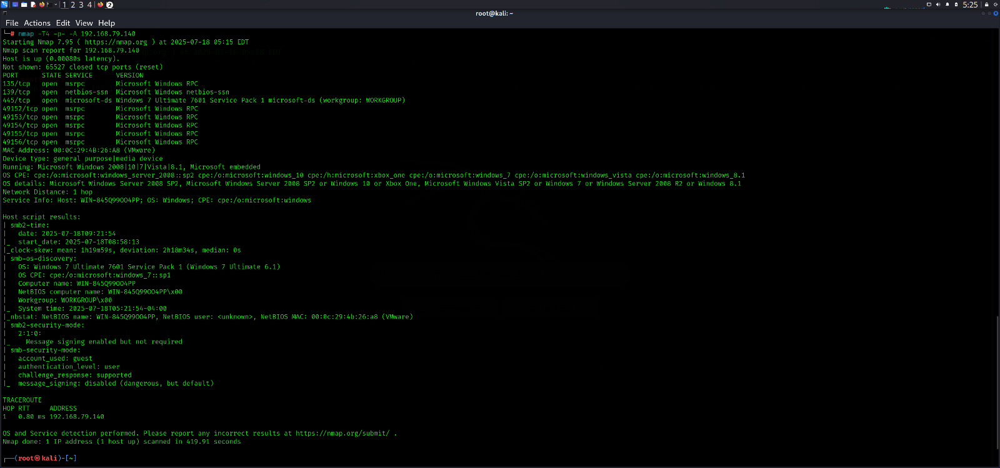

In the network scanning phase, we used Nmap to gather crucial details about the target machine, including open ports, running services, and the operating system fingerprint.
The scan command used was:
nmap -sV -sC -Pn -T4 <target-ip>
Key discoveries:
- Open port: 445/tcp running Microsoft Windows SMB service
- Detected OS: Windows 7 or Server 2008
- Service Version & SMBv1 support revealed
- Helpful script outputs from default Nmap scripts
This discovery informed our next phase — identifying the SMB vulnerability using the OS and port information, leading us to search for exploits based on the Windows 7 + SMBv1 stack.
